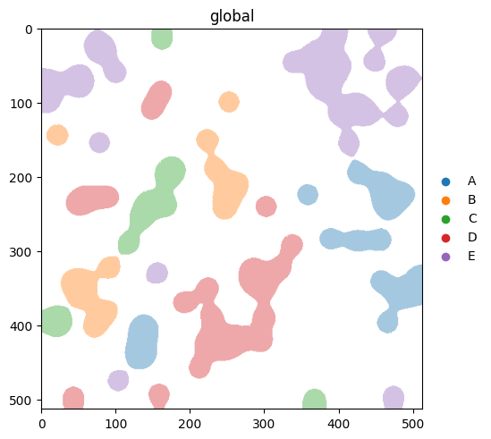
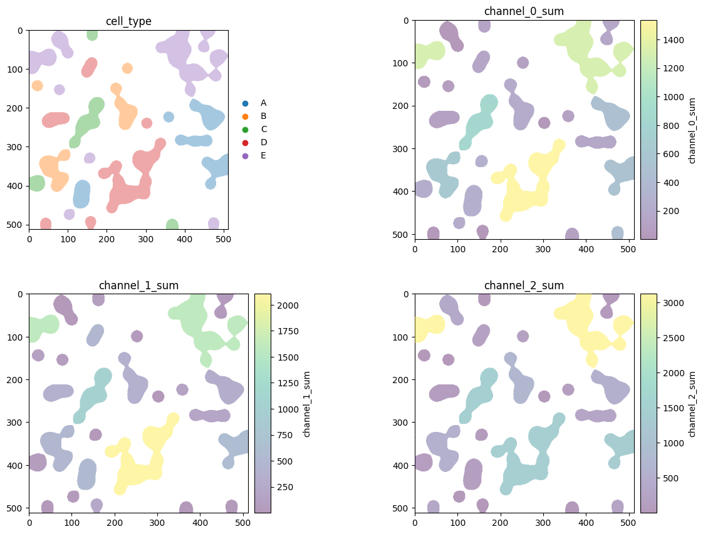
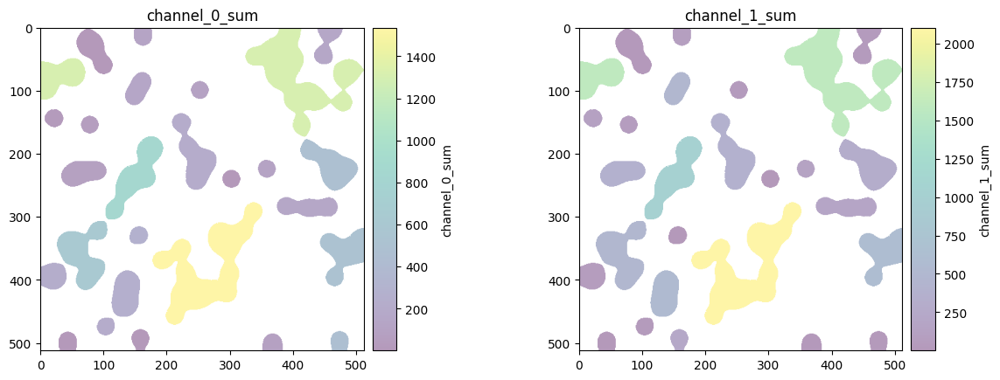
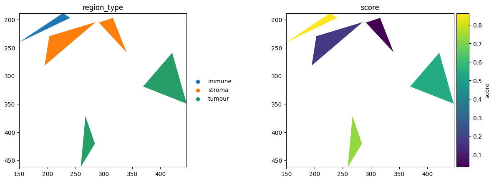
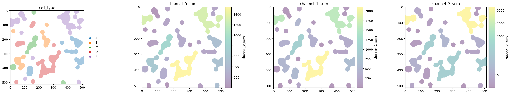

Multi-panel colouring in spatialdata-plot#
Passing a list to color= renders one panel per colouring in a single figure, the same way scanpy’s color=[...] works. By the end you should be able to:
Turn a single
render_labels/render_shapescall into a grid of panels.Mix categorical and continuous colourings in one figure, each with its own legend or colourbar.
Control the grid width with
show(ncols=...)and sharepalette/cmapacross panels.
We use the synthetic blobs dataset throughout so the notebook stays small and reproducible.
Setup#
import numpy as np
import pandas as pd
import spatialdata as sd
import spatialdata_plot # noqa: F401 # registers the .pl accessor
sdata = sd.datasets.blobs()
rng = np.random.default_rng(0)
# A categorical and (built-in) continuous columns on the table annotate blobs_labels.
table = sdata.tables['table']
table.obs['cell_type'] = pd.Categorical(
rng.choice(['A', 'B', 'C', 'D', 'E'], size=table.n_obs),
categories=['A', 'B', 'C', 'D', 'E'],
)
# A categorical and a continuous column directly on a shapes GeoDataFrame.
sdata.shapes['blobs_polygons']['region_type'] = pd.Categorical(
['stroma', 'tumour', 'stroma', 'immune', 'tumour'],
)
sdata.shapes['blobs_polygons']['score'] = rng.random(len(sdata.shapes['blobs_polygons']))
sdata
SpatialData object
├── Images
│ ├── 'blobs_image': DataArray[cyx] (3, 512, 512)
│ └── 'blobs_multiscale_image': DataTree[cyx] (3, 512, 512), (3, 256, 256), (3, 128, 128)
├── Labels
│ ├── 'blobs_labels': DataArray[yx] (512, 512)
│ └── 'blobs_multiscale_labels': DataTree[yx] (512, 512), (256, 256), (128, 128)
├── Points
│ └── 'blobs_points': DataFrame with shape: (<Delayed>, 4) (2D points)
├── Shapes
│ ├── 'blobs_circles': GeoDataFrame shape: (5, 2) (2D shapes)
│ ├── 'blobs_multipolygons': GeoDataFrame shape: (2, 1) (2D shapes)
│ └── 'blobs_polygons': GeoDataFrame shape: (5, 3) (2D shapes)
└── Tables
└── 'table': AnnData (26, 3)
with coordinate systems:
▸ 'global', with elements:
blobs_image (Images), blobs_multiscale_image (Images), blobs_labels (Labels), blobs_multiscale_labels (Labels), blobs_points (Points), blobs_circles (Shapes), blobs_multipolygons (Shapes), blobs_polygons (Shapes)
1. From one colouring to many#
A single string colours one panel. Pass a list and each entry becomes its own panel of the same element — one figure, many colourings. show(ncols=...) lays the panels out in a grid.
sdata.pl.render_labels('blobs_labels', color='cell_type').pl.show()

# Four colourings of the same labels, arranged 2x2.
sdata.pl.render_labels(
'blobs_labels',
color=['cell_type', 'channel_0_sum', 'channel_1_sum', 'channel_2_sum'],
).pl.show(ncols=2)

2. Mixing categorical and continuous#
The panels above already mix a categorical colouring (cell_type, drawn with a legend) with continuous ones (the channel sums, drawn with colourbars). Each panel auto-scales independently, so a channel with a small dynamic range still uses the full colourmap rather than being flattened against a brighter channel.
sdata.pl.render_labels(
'blobs_labels',
color=['channel_0_sum', 'channel_1_sum'],
).pl.show()

3. Multi-panel render_shapes#
The list form works identically for shapes. Here a categorical (region_type) and a continuous column (score) on the same polygons render side by side.
sdata.pl.render_shapes(
'blobs_polygons',
color=['region_type', 'score'],
).pl.show()

4. Controlling the grid with ncols#
ncols sets how many panels sit in a row; the rest wrap onto new rows. The same four colourings become a single row with ncols=4 or a 2x2 grid with ncols=2.
sdata.pl.render_labels(
'blobs_labels',
color=['cell_type', 'channel_0_sum', 'channel_1_sum', 'channel_2_sum'],
).pl.show(ncols=4)

For reproducibility#
# ruff: noqa: F401, F811, I001, E402
# fmt: off
import warnings
import dask
import spatialdata_plot
%load_ext watermark
# fmt: on
%watermark -v -m -p spatialdata,spatialdata_plot,matplotlib,numpy,pandas
Python implementation: CPython
Python version : 3.14.4
IPython version : 9.13.0
spatialdata : 0.7.3
spatialdata_plot: 0.4.1
matplotlib : 3.10.9
numpy : 2.4.4
pandas : 2.3.3
Compiler : Clang 20.1.8
OS : Darwin
Release : 25.2.0
Machine : arm64
Processor : arm
CPU cores : 8
Architecture: 64bit